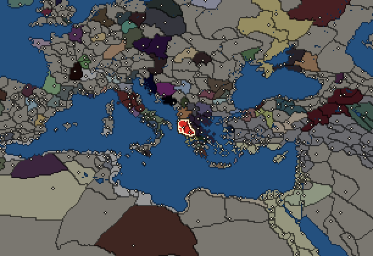
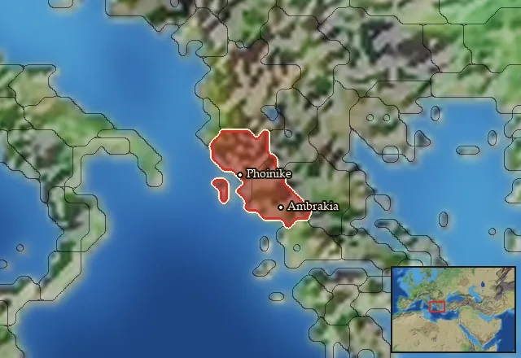

RTR: Imperium Surrectum
RTR: Imperium SurrectumEpirus


- difficulty Difficult
- Western Hellenistic culture
- believes
 Epirote
Epirote - 2 settlements
- capital Ambrakia
- 11,800 manpower
- 2 characters
- 21 faction units
- 436 regional units
The campaign brief
"Pyrrhos, like Achilles could not endure idleness, but ate his heart away, remaining there, and pined for war-cry and battle." – Plutarch, Life of Pyrrhos (partially quoting Homer)
I remember the gleam of our shields; the impenetrable forest of spears smiting down the enemy; the triumphant call of our soldiers as our vanquished foes fled the field. But that was long ago, now. More recent years have seen calamity after calamity, and all that we had gained, lost. I now fear for the survival of my people...
They once dismissed us as Barbarians. In their fancy cities, with their demos and their agora, the Greeks looked down upon us, even as they themselves fell into insignificance. And yet, this slur was as wrong for us as it was for the Makedonians, who spread Greek language and knowledge to the far Indus. When their time of need came, it was to us they turned. Distracted by their perpetual bickering over who rules in Pella and Babylon, the other Hellenic states were blinded to the new threat arising in the west: Rome. Long just one of many local Italian states, the republic rapidly united large parts of the peninsular in recent decades. Finally, as their legions threatened the Greek city of Taras (Tarentum) and with it all of "Magna Graecia" (the Greek holdings in Italy and Sicily), it fell to us to respond. And so we did!
Our battle-hardened King Pyrrhos gathered the troops and sailed to Italy, and won many glorious victories over the Romans. At Heraclea and Asculum, we were invincible; the Romans could not break our line. But alas! Our efforts were in vain. For each legion we smote down, another took its place. At the same time, our own numbers dwindled as our land - though homely - is a rugged one, and our people are few: we could not easily replenish our losses.
Eventually, Pyrrhos left Italy and sought the easier pastures of Sicily, but he did not reckon for the constant intrigues of the Syracusans. King of Sicily, he was made, but the libations were no sooner drunk, than they wished him no longer. Despite his efforts in defence of the Sicilian Greeks – coming within an ace of casting the Carthaginians off the island – the perfidious Sicilians cast him out, and Pyrrhos returned home, destitute, and with a shadow of the army with which he had left.
If only the old warrior could have lain to rest then! But woe upon us, the darkest days were yet to come. For Pyrrhos sought ever more conquests, without ever staying in one place long enough to make permanent gains. First, he seized Makedonia, but soon he grew weary of Pella, and desired the city of Sparta instead. Defeat there, and even the death of his firstborn son, did not deter him, for he immediately after assailed Argos, where Fortune finally deserted him: a roof tile to the head from an Argive woman brought an undignified end to his life.
Now Pyrrhos is gone. He left our people spent, our coffers empty, all our strength squandered in service of his lust for glory. Perhaps, if we remain inconspicuous, then none will take notice of us. But the twin threats of Rome to the west and Macedon to the east make this a risky path. Perhaps it is time for an heir to Pyrrhos to arise and lead us to fresh glories – and better fortune!
Starting settlements
Epirus begins with 2 settlements and 11,800 manpower.
| Settlement | Region | Size | Manpower | Already built | Settlement | Region | Size | Manpower | Already built |
|---|---|---|---|---|---|---|---|---|---|
| Ambrakia (capital) | Ambrakikos Kolpos | large town | 6,500 | 12 buildings | Phoinike | Chaonia | large town | 5,300 | 11 buildings |
What is already built in each settlement
Ambrakia, in Ambrakikos Kolpos: Small Treasury, Governor's Villa, Wooden Palisade, Homeland, Region Information Scroll, Roads, Local Barter, Olive Grove (Rural), Trade Port, Slope Pasturing (Husbandry), Basic Armoury, Cisterns (Sanitation)
Phoinike, in Chaonia: Governor's Villa, Wooden Palisade, Homeland, Region Information Scroll, Roads, Local Barter, Trade Port, Grape Orchards (Rural), Irrigation Ditches (Crops), Training Grounds, Cisterns (Sanitation)
Homeland
Epirus's homeland is 2 regions. Only there can it install the Homeland government (more on homelands).

Starting diplomacy
Allied with (1):  Aetolian League
Aetolian League
Trade agreements with (1):  Aetolian League
Aetolian League
At war with (2):  Antigonid Kingdom ·
Antigonid Kingdom ·  Illyrian Kingdom
Illyrian Kingdom
Like every faction, it is also at war with the  Free Peoples, who hold every settlement no faction does.
Free Peoples, who hold every settlement no faction does.
Starting characters
| Name | Role | Age | Name | Role | Age | ||||||
|---|---|---|---|---|---|---|---|---|---|---|---|
| Alexandros | General | 23 | Helenos | General | 22 |
Reforms
For every faction: Military innovations have arrived!, Second wave of military innovations have arrived!.
Faction mechanics
From the game's own guide. See also the other game guides.
Special Mechanics
Epirus has a mercenary centre in Ambrakia, check its Region Information Building for more details.
Military reforms
Epirus has one reform.
Epirote reforms requirements: Have at least 1 huge city
Unlocks: Aspidophoroi
Units you can recruit
The same as in the main campaign.